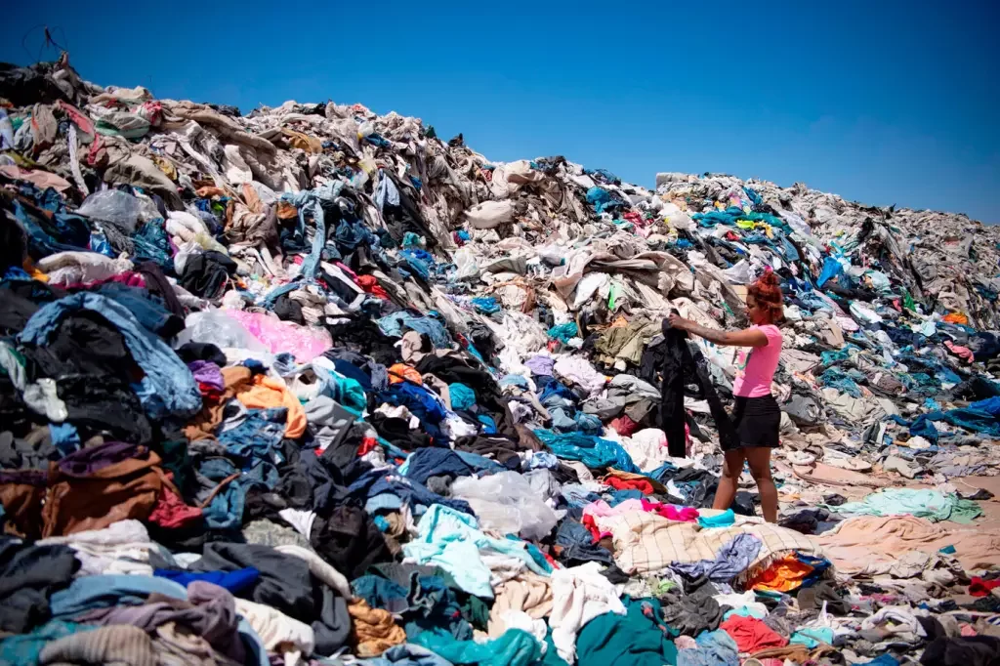

PROBLEMAS / SOLUÇÕES
As consequências sobre o descarte incorreto de roupas pode ser prejudicial para o meio ambiente, à medida que a indústria da moda continua a expandir, os impactos ambientais são mais evidentes. Quando o produto não é mais utilizado se desloca em aterro sanitário ou lixões mesmo que a sua vida útil não tenha se esgotado, a solução pra evitar esse tipo de problema é fazer algumas doações de roupas pra as intituições.

O descarte inadequado de roupas contribui para uma série de problemas ambientais, que vão desde a
poluição da água até a emissão de gases de efeito estufa.
Somente 36.000 toneladas dos resíduos têxteis
são reaproveitadas para fazer
barbantes, novas peças de roupas, fios, e também para a fabricação de
estopas, colchões.
Fast fashion
Fast fashion é um modelo de negócio da indústria da moda que se caracteriza pela uma tendência de
ciclo rápido,
incentivando o consumo de itens baratos e pouco duráveis, que por sua vez causam impacto na produção, no consumo, no meio social e gerando muito
impacto negativo como no meio ambiente, sendo elas as emissões de CO2 e poluição na água.
Com a produção são feitas com
tecidos de fibras descontínuas mais baratos e finos utilizados, estas peças não
podem ser recicladas em novos tecidos, assim indo parar em aterros sanitários e lixões. Uma solução é dependendo do material, é transformar a peça em pano de chão.